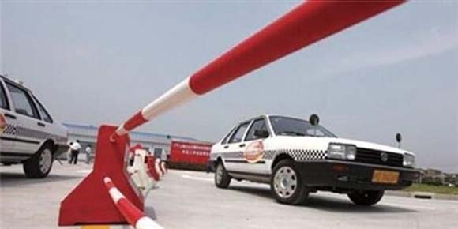

科目三相较于科目二来说是比较简单的，但是为什么很多考生都不能顺利通过，多半是因为大意，不注重细节所以才导致了科目三考试的失败。给大家介绍关于科目三考试中最容易被考生忽略的9条扣分点，希望能给大家做个参考。

1上车前要围绕车辆转一周，看车辆周围、底部是否有障碍物
2上车姿势、驾驶姿势和操作方法是否正确，是否知道系安全带;
3起步前是否观察仪表和三镜，气压制动车辆的起步气压是否达到要求;
4是否聆听发动机有无异常响声，起步、变速和停车方法是否正确，超车、让车、会车、跟车时是否遵循既有的原则;
5转弯时的方法，变换车辆行驶车道、位置时的方法，遇到交通标志是否能按照要求去行驶，能否严格遵守交通法规;
6能否知道各种道路上本车辆的行驶位置、速度，掌握车辆位置;
7夜间行驶时能否正确使用灯光，遇到应该减速的路段是否减速;
8行驶途中是否注意观察仪表和三镜;
9是否能应付、处理道路上各种复杂交通、路面条件下的。